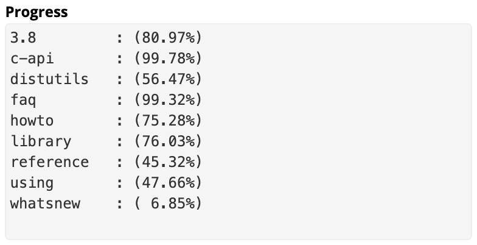

Traducción de la
Documentación
Oficial
de 
 #PythonDocsEs
#PythonDocsEs
Colaboraciones 💪
Personas uniéndose en distintas zonas horarias
🇦🇷 🇧🇴 🇨🇱 🇨🇴 🇨🇷 🇨🇺 🇪🇨 🇸🇻 🇪🇸 🇬🇹 🇬🇶 ðŸ‡ðŸ‡³ 🇲🇽 🇳🇮 🇵🇦 🇵🇾 🇵🇪 🇵🇷 🇩🇴 🇺🇾 🇻🇪
- 143 Issues abiertas
- 179 PR abiertas
- 143 personas en Telegram
Colaboraciones 💪
14314 Issues abiertas
17938 PR abiertas
- 143 personas en Telegram
-
129
Issues Cerradas
-
141 PR Mergeadas
- 63 Colaboradores Activos
Progreso de la traducción 🎉
¡Unéte!
python-docs-es.readthedocs.io/es/3.8/faq.html🇦🇷 🇧🇴 🇨🇱 🇨🇴 🇨🇷 🇨🇺 🇪🇨 🇸🇻 🇪🇸 🇬🇹 🇬🇶 ðŸ‡ðŸ‡³ 🇲🇽 🇳🇮 🇵🇦 🇵🇾 🇵🇪 🇵🇷 🇩🇴 🇺🇾 🇻🇪
 python/python-docs-es
python/python-docs-es